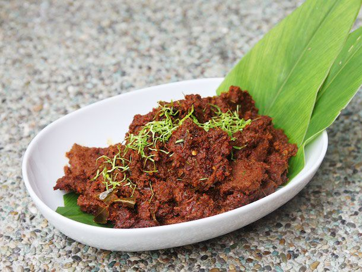

RENDANG

INGREDIENTS
- 1 kg beef, cut into cubes
- 2 cans of coconut milk
- 5-6 kaffir lime leaves
- 3 stalks of lemongrass, bruised
- 2 turmeric leaves, torn (optional)
- 1 tamarind slice, soaked in 1/4 cup water, then strained
- 3-4 tablespoons of oil
- 2 teaspoons of salt, or to taste
- 2 teaspoons of sugar, or to taste
For the spice paste:
- 10-12 dried red chilies, soaked in hot water until softened
- 5-6 shallots, peeled
- 3-4 cloves of garlic, peeled
- 2 inches of ginger, peeled
- 2 inches of galangal, peeled
- 1 tablespoon of coriander seeds
- 1 tablespoon of cumin seeds
- 1 teaspoon of fennel seeds
- 1/2 teaspoon of black peppercorns
INSTRUCTIONS
- Blend all the ingredients for the spice paste into a smooth paste.
- Heat oil in a wok or pot over medium-high heat. Add the spice paste and stir-fry until fragrant,
about 5-7 minutes.
- Add the beef and stir to coat with the spice paste. Cook for a few minutes until the beef is browned
on the outside.
- Pour in the coconut milk, add the kaffir lime leaves, lemongrass, turmeric leaves (if using), and
tamarind juice. Stir well.
- Bring the mixture to a boil, then reduce heat to low and simmer for about 3-4 hours, stirring
occasionally, until the beef is tender and the sauce has thickened and reduced.
- Season with salt and sugar to taste. Serve hot with steamed rice.